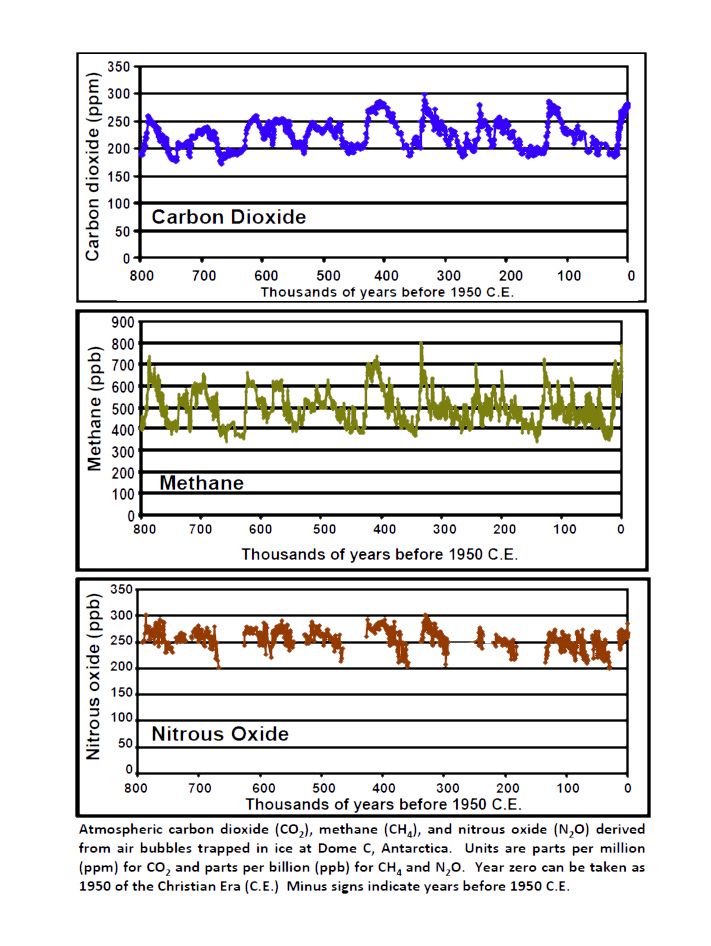
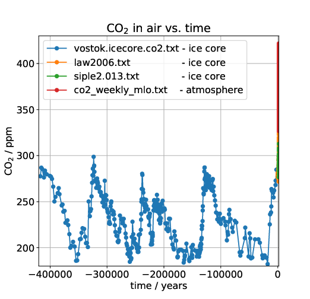
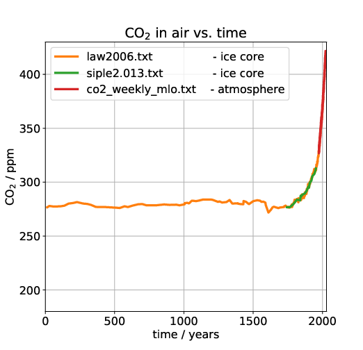
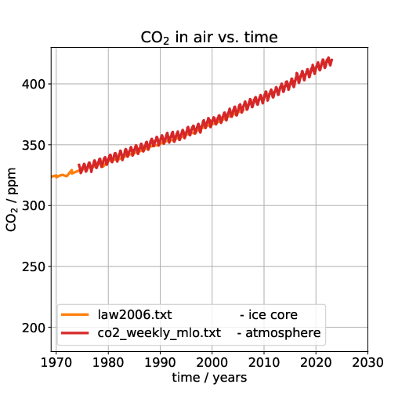
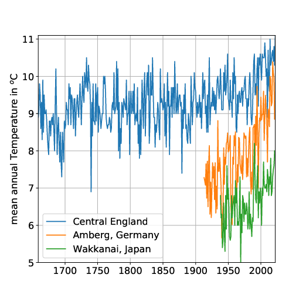
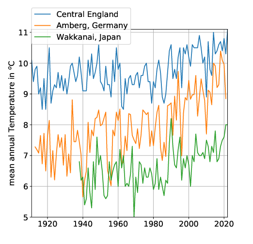
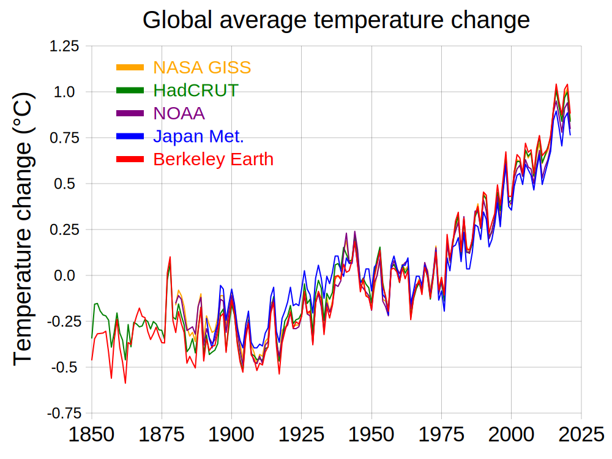

The plots above show data from old air captured in bubbles in ice cores from
Antarctica. The top plot shows the CO2 content. Over this long time scale of
800000 years the CO2 content of our atmosphere was fluctuating between about
180 ppm and 300 ppm.
The plots below show again show data from Antarctic ice cores
as well as direct measurement during the last 50 years.
  
All plots show the same data, but we have successively zoomed in in time. The first one shows about 400000 years. We see that until very recently the CO2 content of our atmosphere was fluctuating between about 180 ppm and 300 ppm. This only started changing in the 20th century. The last plot zooms in onto direct atmospheric measurements from Mauna Loa Observatory (MLO). Hence it is clear that, for the entire time that our species has even existed, CO2 was never as high as today. It is thus clear that the large amount of CO2 in the atmosphere is due to human activity. The data can be found at https://cdiac.ess-dive.lbl.gov/trends/co2/ice_core_co2.html.
 
These plots show annual means for Central England, Amberg in Germany and Wakkanai, Japan. The Central England series is the longest in the world. As we can see there is a warming trend since about 1950 which coincides with the steep increase in CO2 in the earlier plots. However, we can also see that there are a lot of fluctuations. Nevertheless, all three, the temperature maxima, minima and averages seem to have risen since 1950. The amount of the rise is about 1K (one degree Celsius) in Central England and Wakkanai, and even higher in Amberg.
Of course, these are just measurements at three arbitrary locations. However, one obtains qualitatively similar pictures in many places in the world. Yet what is more important is the mean of temperature changes all over the world. Determining this mean is a research area of its own. It is carried out not only using weather stations all over the world, but also satellite measurements.

This plot shows the global average temperature change from various sources. As one can see, there is a rise of about 1K (one degree Celsius) since 1950. There is also this map.
The only way to answer this, is by trying to calculate how the climate behaves under different circumstances. This means the that we have to model the entire ocean and atmosphere of the planet. Model here means to solve all the different physics equations that determine them. Such modeling is not easy, and requires large scale supercomputer simulations. Unlike the facts above, it is not a topic that can be easily explained on a webpage. Rather it requires years of study to even begin to understand all the relevant topics. This means most people will never understand this topic on their own. Rather they have to believe what someone else says.
So who should we believe? Well, for sure not anyone who is not a scientist in this area. Now, the scientists have reached consensus (i.e. the vast majority agree with each other) that the temperature rise which we observe, is due to the increased amount of CO2 that humans have put into the atmosphere. Ideally that should close the case, at least until the scientific consensus changes (which sometimes does happen in science). Anything else would mean that we do not use the best knowledge available, and rather base our beliefs on something that people who are ignorant of the topic have made up.
To get an idea about the scientific consensus, you can look here: https://www.ipcc.ch.
It turns out that rising temperatures (even by a few degrees) can have negative effects for humanity. We should thus find a way of life that avoids further increases in atmospheric CO2, as much as possible.